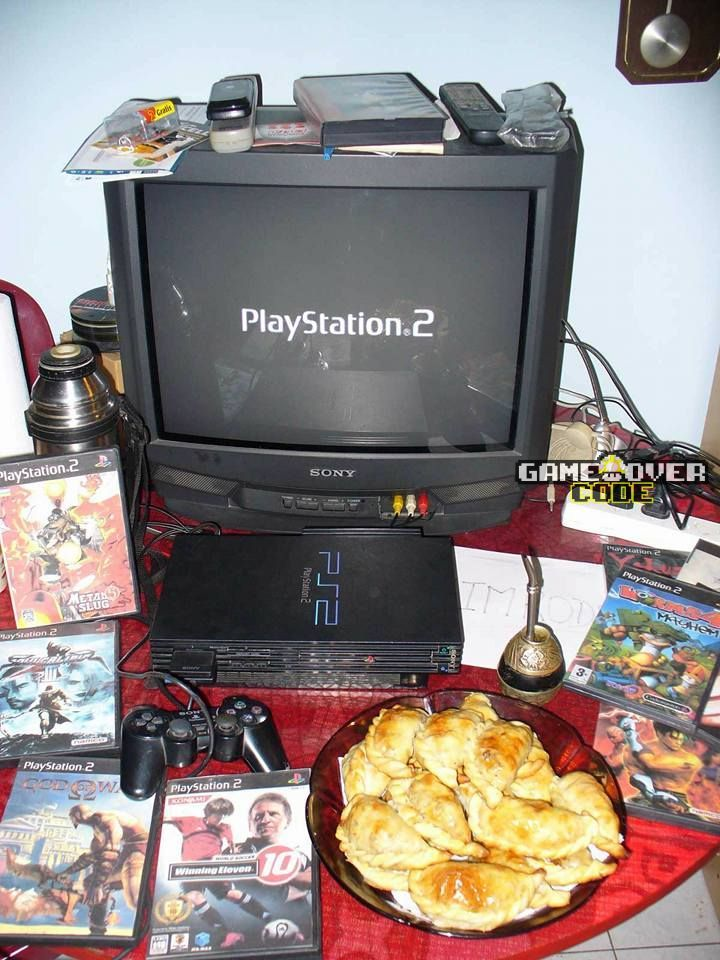
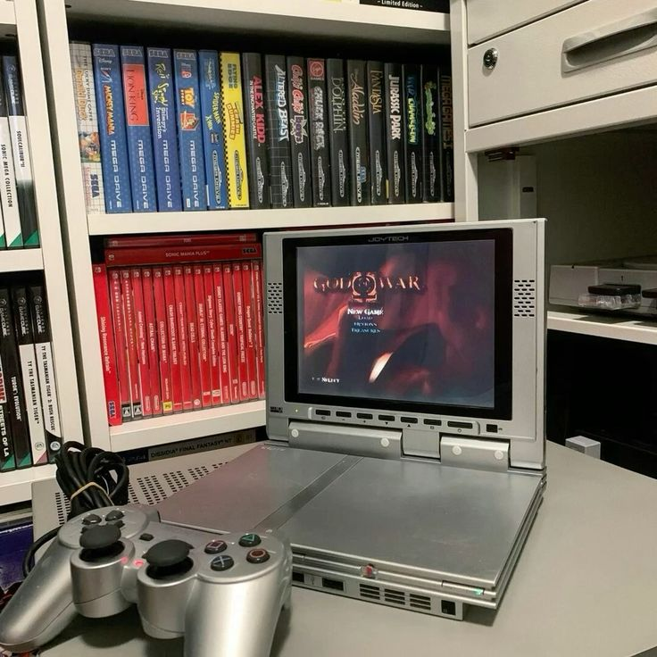

📖 Blog
Retrospil-magien lever videre.
Læs vores indlæg om alt fra spilhistorie og konsol-anmeldelser til tips, guides og sjove historier fra gamingens guldalder.
Er retrospil stadig relevante? Læs mere om folks meninger her: hvorfor-er-retrospil-pa-mode-igen?
Intresseret i retrospil historie? Læs mere om det her: retrogaming-1-introduktion-til-retrogaming
